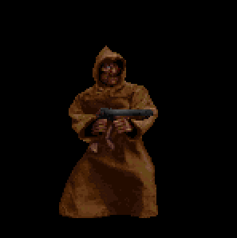

NOTE: This site is non-indexed, so you can only view this site if you've been given the URL.
MY AUDIO CATALOG
Occasionally, I'll put together some sound experiment or a fully-fledged track and release it here. I'm really big on synths and dark-ambience, so, you'll be seeing that kind of stuff a lot. You can listen to these in your browser, but I will also provide download links, free of charge. Enjoy!
"Liver"
Release Date: October 2nd 2026.
Download MP3

archliver - 2026